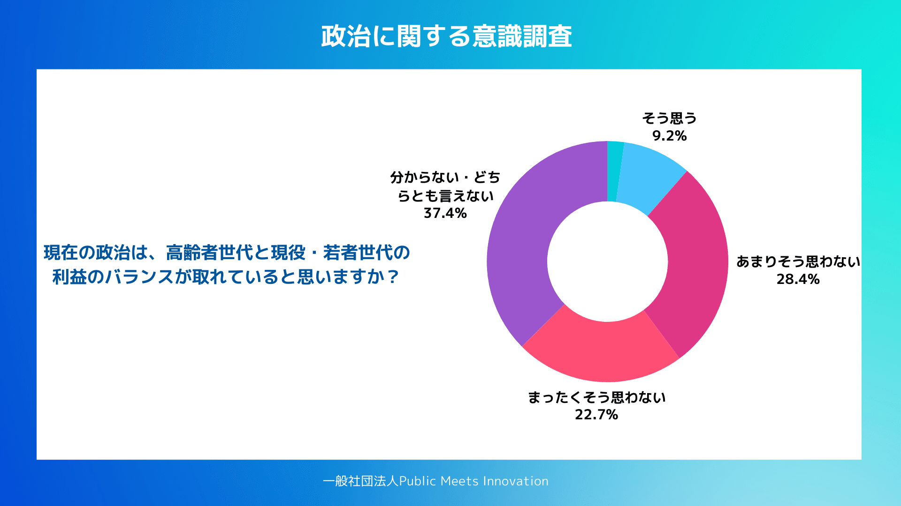
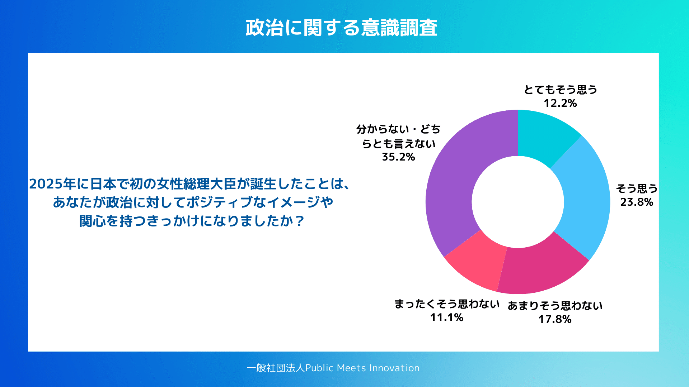
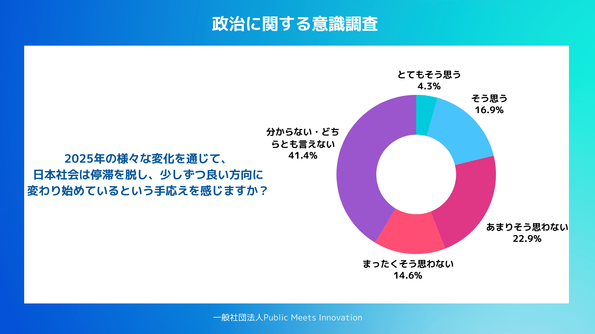
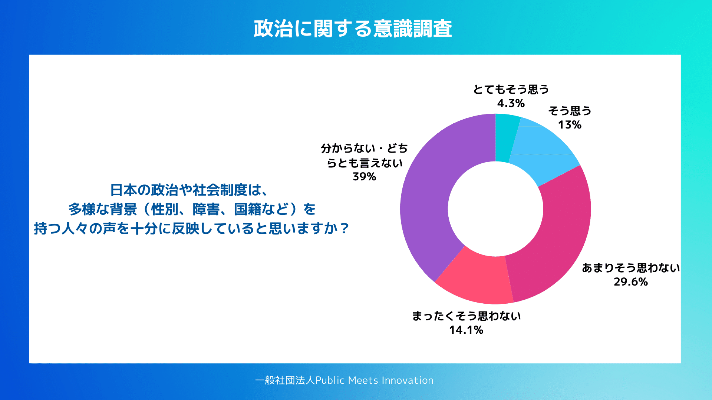
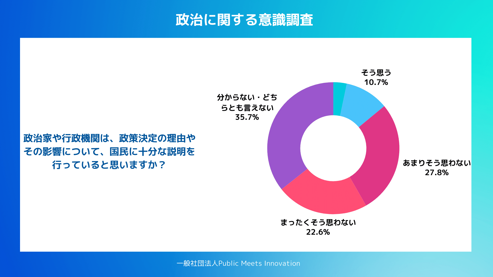
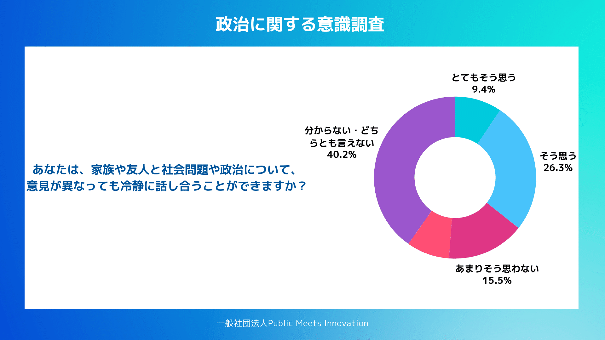

一般社団法人Public Meets Innovationでは、政治意識に関するインターネット調査を実施した。調査期間は2026年1月9日から1月10日、日本全国の19歳以上3000人を対象としている。
本調査から浮かび上がったのは、若者・現役世代を中心に広がる強い「負担感」と「閉塞感」である。社会保障や財政をめぐる世代間の不均衡、将来世代への配慮が十分とは言えない政策運営、社会が良い方向に変わっているという実感の乏しさ、そして政治家や行政による説明不足、これらが重なり合い、政治に対する信頼や参加意識を静かに蝕んでいる実態が明らかとなった。
こうした状況下で、2026年1月19日に高市首相が表明した衆議院解散は、（1）唐突な解散のタイミング、（2）政党再編を伴う流動的な政治状況という二つの要因によって、有権者の政治不信をさらに強める可能性がある。とりわけ、政治に「声が届いていない」と感じる層にとって、今回の解散は期待よりも不安を喚起する出来事として受け止められかねない。
本論考では、40歳以下の調査結果を中心に、若年層が抱える政治意識の構造を整理するとともに、衆議院選挙を前にした日本政治の課題と展望について分析を行う。
若者・現役世代と高齢者世代の利益バランス
40歳以下の回答からは、現在の政治が世代間の利益配分を適切に調整できていないという強い認識が確認される。
「現在の政治は、高齢者世代と現役・若者世代の利益のバランスが取れていると思いますか？」に対し、40歳以下では肯定的回答（とてもそう思う2.2％、そう思う9.2％）は計11.4％にとどまった。一方で否定的回答は「あまりそう思わない」28.4％、「まったくそう思わない」22.7％の計51.1％に達している。
この結果は、若者・現役世代が日本の社会保障制度や財政構造を「不公平な配分」として認識していることを示唆する。特に社会保険料負担や税負担は現役世代に集中する一方、給付の多くは高齢者世代に向かうという構造が、日常的な生活実感と結びつき、世代間の認識ギャップを拡大させていると考えられる。
重要なのは、これは単なる世代対立意識ではなく、「負担と意思決定の乖離」への不満である点だ。負担の主体であるにもかかわらず、政策形成に十分関与できていないという感覚が、政治不信の基層を形成している。

2026年1月実施「政治に関する意識調査」より
将来世代の負担を考慮しない政策
将来世代への配慮に関しても、同様の傾向がみられる。
「現在の政策決定は、30年後や50年後の将来世代の負担を十分に考慮して行われていると思いますか？」に対しても、否定的回答が53.2％（あまりそう思わない28.2％、まったくそう思わない25.0％）と過半数を占めた。肯定的回答は12.5％にとどまる。
この結果は、若者世代が現在の政治を「短期志向的」と評価していることを明確に示している。選挙サイクルに左右されやすい政策決定、将来世代にツケを回す財政運営、抜本改革を避ける「先送り政治」。この構図が、将来不安と結びついて認識されている。
若年層にとって将来世代とは抽象的な存在ではなく、自身や自分の子ども世代そのものである。ゆえに将来負担を考慮しない政策は、政治への期待低下だけでなく、「政治は信頼に値しない」という認識を強める要因となっている。

2026年1月実施「政治に関する意識調査」より
日本社会は良い方向に変わっていない
2025年の女性総理誕生や社会変化に関する設問では、肯定36.0％、否定28.9％、「分からない・どちらとも言えない」35.2％と評価が拮抗した。また「日本社会が良い方向に変わり始めているか」という問いでも、肯定21.2％、否定37.5％、中間層41.4％と、明確な楽観は確認されていない。
この結果が示すのは、希望と失望が交錯する「停滞感」である。象徴的な出来事が起きても、それが生活実感の改善や将来展望の明確化につながっていないため、評価を保留する層が厚く存在している。
言い換えれば、制度的・象徴的な変化は一定の評価を受けつつも、「社会が本当に動き出した」という確信には至っていない。政治的変化が物語として共有されず、個々人の生活と接続されていない点が、評価の分散を生んでいる。
とてもそう思う12.2%、そう思う23.8%、あまりそう思わない17.8%、まったくそう思わない11.1%と、肯定的な意見が36%であるのに対し、否定的な意見が28.9%、分からない・どちらとも言えないが35.2%とそれぞれの立場が拮抗している。

2026年1月実施「政治に関する意識調査」より

2026年1月実施「政治に関する意識調査」より
声の届かない政治
政治の包摂性や説明責任に関する設問からは、若年層が政治との間に強い断絶感を抱いている実態が明確に読み取れる。
「日本の政治や社会制度は、多様な背景（性別、障害、国籍など）を持つ人々の声を十分に反映していると思いますか？」という問いに対し、肯定的回答は17.3％にとどまり、否定的回答は43.7％を占めた。約4割が「分からない・どちらとも言えない」と回答しており、政治が誰の声を代表しているのかが見えにくい状況にあることが示されている。
さらに、「政治家や行政機関は、政策決定の理由やその影響について、国民に十分な説明を行っていると思いますか？」という設問では、肯定的回答は約21％にとどまる一方、「あまりそう思わない」27.8％、「まったくそう思わない」22.6％と、否定的評価が50.4％に達した。説明が十分であると感じていない若者が過半数を占めている点は重い。
この結果は、政策内容そのもの以前に、「なぜその政策が必要なのか」「誰にどのような影響が及ぶのか」という説明プロセスへの不信が、政治への距離感を拡大させていることを示唆する。負担増や制度変更が続くなかで、理由や将来像が共有されないことは、政治を一層不可視な存在へと押しやっている。

2026年1月実施「政治に関する意識調査」より

2026年1月実施「政治に関する意識調査」より
一方で、「あなたは、家族や友人と社会問題や政治について、意見が異なっても冷静に話し合うことができますか？」という問いでは、肯定的回答が約35.7％、中間層が40.2％と、対話の可能性そのものは社会の側に残されていることも確認された。
つまり問題は、市民が政治を語れないことではなく、政治の側が語りかけていないことにある。
説明不足と参加実感の欠如が、「どうせ聞いてもらえない」という感覚を生み、それが政治的沈黙を再生産している。
若者世代が抱く負担感や閉塞感は、単なる経済的不満ではなく、「理解も納得もできないまま決定が進む政治プロセス」への構造的な違和感として蓄積していると言える。

2026年1月実施「政治に関する意識調査」より
まとめ
40歳以下の政治意識から見えてくるのは、強い怒りや急進的分断ではなく、静かな諦念である。
・世代間で不均衡な負担構造
・将来世代を見据えない政策運営
・変化を実感できない社会
・声が届かないという感覚
これらが重なり合い、「政治と自分の距離」を拡張させている。若者の政治不信は無関心ではなく、構造的な経験の蓄積によって形成された合理的判断に近い。
今後の政治に求められるのは、単なる制度改革や象徴的刷新ではなく、負担と意思決定、現在と将来、説明と納得を再接続するプロセスそのものである。その回路を再構築できるかどうかが、若年世代の政治参加と民主主義の持続性を左右すると言える。
より詳細な調査結果は現在分析中であり、追ってPMIのHPやnoteで公開いたします。